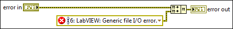

Error Ring
Owning Palette: Dialog & User Interface VIs and Functions
Requires: Base Development System
Use the Error Ring to quickly select and pass NI or custom error codes throughout your VI.
 Add to the block diagram Add to the block diagram |
 Find on the palette Find on the palette |
You can configure the ring to return a built-in error message or you can create a custom error message for a one-time use. By default, the source string of the error cluster contains the call chain from the top-level VI to the current VI.
(Real-Time Module) Exclude the call chain to reduce jitter in real-time applications. You cannot use the Error Ring in VIs that run on RT targets.
The following is a configured Error Ring.

The configured Error Ring has the following parts.
| Section | Description | ||
|---|---|---|---|
| Toggles between error and warning. | |||
| Indicates if the error includes the call chain. | |||
| 6:LabVIEW� | Description of the error. Right-click the Error Ring and select Visible Items»Error Explanation Text from the shortcut menu to show or hide the error description.
| ||
| Launches the Select Error dialog box. |

After you select the error, you can change the type (Error or Warning) and whether to include the call chain by clicking the icons on the ring. You also can toggle the error type and call chain options by right-clicking the Error Ring and selecting Generate Error, Generate Warning, Include Call Chain, or Exclude Call Chain from the shortcut menu.